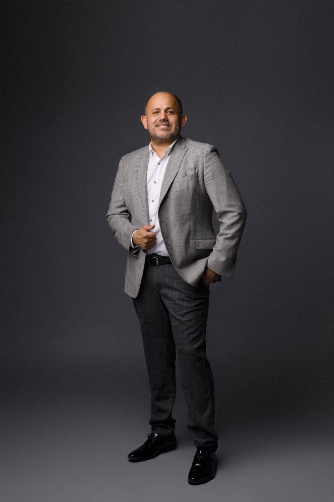

Nuestra Filosofía
Aprender,
Crecer,
Inspirar.
Crecer,
Inspirar.
Formando estudiantes íntegros con excelencia académica y fe genuina.
Galilee Christian School — formación académica trilingüe de estándares internacionales, fundamentada en principios bíblicos desde preescolar hasta secundaria.


"Instruye al niño en el camino correcto, y aun en su vejez no lo abandonará." Proverbios 22:6
Brindar servicios educativos de excelencia, sirviendo a la familia y a la sociedad en la formación integral de niños y jóvenes bajo estándares internacionales, de acuerdo con principios cristianos bíblicos.
To provide educational services of excellence, serving the family and society in the comprehensive education of children and youth under international standards and Christian principles.
Ser la principal institución educativa cristiana trilingüe de la zona, que incide en el desarrollo social a través de una educación que atiende los estándares de la época en apego estricto a los fundamentos bíblicos.
To be the central zone's foremost Christian tri-lingual institution and bring social development through education and strict adherence to biblical foundations.
Disciplina , Integridad , Pasión , Confianza , Fe activa en Jesucristo. Excelencia académica sin compromisos. Amor genuino al prójimo. Comunidad familiar y unida.
Currículo americano Abeka Books integrado con Educación Cristiana en cada nivel. Estándares internacionales en Siguatepeque.
Estimulación temprana con amor y principios bíblicos. El primer paso hacia una vida de propósito.
Bases sólidas en todas las áreas del conocimiento acompañadas de formación en carácter y valores cristianos.
Preparación universitaria y liderazgo cristiano. Nuestros graduados califican para becas en Oral Roberts University.
Trabajamos de la mano con instituciones de prestigio global para garantizar los más altos estándares educativos y tecnológicos.
Utilizamos el currículo americano Abeka Books — materiales educativos de excelencia cristiana reconocidos internacionalmente. Nuestros estudiantes aprenden con los mismos libros que se usan en las mejores escuelas de Estados Unidos.
Nuestra alianza con ORU (Oral Roberts University) — universidad cristiana de EE.UU. — permite que nuestros graduados apliquen a becas y programas de intercambio estudiantil. Una puerta al mundo para nuestros jóvenes.
Cloud Campus Pro es nuestra plataforma digital para gestión académica — notas, comunicados, clases en línea, asistencia y más. Padres y estudiantes siempre conectados con la escuela.
Cada inicio de semana comenzamos el día con alabanzas, oración y la Palabra de Dios. Un momento que marca el corazón de cada estudiante.
"Busca primero el reino de Dios" — Mt 6:33Servicios semanales de adoración y enseñanza bíblica para toda la comunidad escolar.
Fundamentados en la Biblia como Palabra infalible de Dios. Fe en Jesucristo como único Salvador.
Encuentros anuales que transforman vidas y fortalecen la comunidad entre estudiantes, maestros y familias.
Creemos en la Biblia como Palabra inspirada de Dios, en Jesucristo como Señor y Salvador, y en el Espíritu Santo.
Grupos de jóvenes, semanas de oración, grupos pequeños y campamentos bíblicos que nutren la fe de cada generación.
"No os conforméis a este siglo" — Ro 12:2Voleibol, baloncesto y atletismo bajo el estandarte del GCS Bison. El deporte es parte de nuestra formación integral — disciplina, trabajo en equipo y espíritu de superación.
El ajedrez desarrolla pensamiento estratégico, concentración y disciplina mental. Nuestros estudiantes compiten y ganan — porque la mente entrenada conquista el futuro.
Pintura, coro, banda de adoración y clubes bíblicos. Un campus diseñado para que cada talento florezca en un ambiente de fe y creatividad.
Aprender. Crecer. Inspirar.
Donde transformamos el futuro, una generación a la vez.
Galilee Christian School mantiene un estándar de excelencia académica internacional y formación cristiana profunda en toda la institución. Contamos con nuestra Sede Principal en Siguatepeque, Comayagua, con instalaciones completas incluyendo laboratorios, áreas deportivas y biblioteca digital. También hemos expandido nuestra visión con nuestra sucursal en Catacamas, Olancho, llevando la misma calidad educativa cristiana a más familias.

La Galilee Christian School nació en el corazón de Dios y fue depositada como un sueño en el corazón del Pastor Celeo Castañeda. Desde joven, tuvo la bendición de estudiar en el extranjero — experiencia que le mostró el valor transformador de una educación trilingüe y de calidad.
Con el paso del tiempo, ya sirviendo en el ministerio pastoral, el Señor comenzó a inquietar su corazón con un deseo firme: establecer una escuela cristiana que brindara a los niños de la comunidad no solo excelencia académica, sino formación espiritual fundamentada en la Palabra de Dios.
El profeta Hernán Acosta confirmó mediante una palabra profética que Dios entregaría una escuela donde muchos niños serían alcanzados y formados para Su gloria.
Se iniciaron los trámites formales. Aunque se planeó comenzar solo con preescolar, la obra de Dios superó toda expectativa y la institución abrió con todos los niveles académicos desde el primer día.
Sobrevivieron la pandemia, expandieron a homeschool y escuela en línea, y hoy operan con dos sedes — en Siguatepeque y Olancho — levantando generaciones con valores cristianos y excelencia académica.
"Aunque la visión tardará aún por un tiempo, mas se apresura hacia el fin, y no mentirá; aunque tardare, espéralo, porque sin duda vendrá, no tardará."
Habacuc 2:3
Visítanos, escríbenos o llámanos. Estamos listos para atenderte y resolver todas tus dudas sobre Galilee Christian School.
"La educación más valiosa es la que forma el carácter tanto como el intelecto."
Galilee Christian School · Siguatepeque, HNHonduras · Mismo estándar académico cristiano